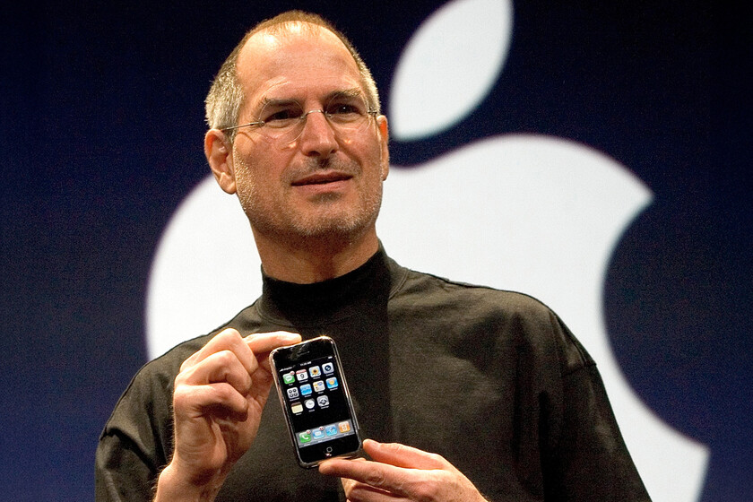
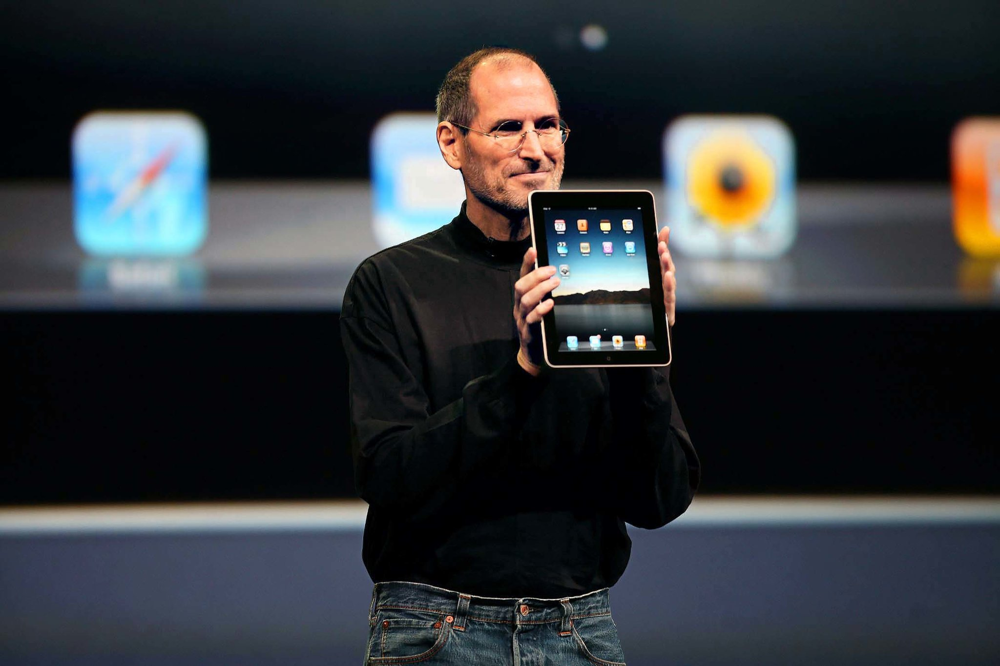

Infancia, estudios y la creación de Apple
Steve Jobs nació el 24 de febrero de 1955 en San Francisco y fue dado en adopción a Paul y Clara Jobs, quienes lo criaron en Mountain View, en el emergente entorno tecnológico de Silicon Valley. Desde temprana edad mostró una curiosidad poco convencional: desmontaba aparatos electrónicos para comprender su funcionamiento y manifestaba una inclinación simultánea hacia lo técnico y lo estético.
Durante la adolescencia conoció a Steve Wozniak, con quien compartiría no solo amistad, sino una visión innovadora sobre la computación personal. Esta etapa fue decisiva, pues en ella se configuró su carácter inconformista y su tendencia a desafiar estructuras establecidas.
En 1972 ingresó al Reed College (Oregon), pero abandonó los estudios formales tras seis meses. No obstante, continuó asistiendo como oyente a clases que despertaban su interés, especialmente caligrafía. Esta experiencia, aparentemente marginal, tendría consecuencias trascendentales años después al influir en la tipografía y el diseño visual del Macintosh.
En este periodo también viajó a la India, donde buscó experiencias espirituales y reflexivas. Esta búsqueda interior fortaleció su inclinación hacia el minimalismo, la intuición y la contemplación, elementos que más adelante impregnarían su filosofía empresarial y su concepción del diseño.
En 1976, Jobs, junto a Steve Wozniak y Ronald Wayne, fundó Apple Inc. en el garaje de su familia. La Apple I y posteriormente la Apple II marcaron el inicio de la computación personal accesible al público general.
El lanzamiento de la Macintosh en 1984 consolidó su visión: una computadora con interfaz gráfica intuitiva, orientada a usuarios no especializados. Jobs no solo impulsaba innovación técnica, sino una nueva narrativa tecnológica centrada en la experiencia humana.
En 1985, tras conflictos internos con la junta directiva, Jobs fue apartado de Apple. Este “exilio” empresarial no significó fracaso, sino transformación. Fundó NeXT, enfocada en sistemas avanzados para educación y empresas, y adquirió lo que luego sería Pixar, estudio responsable de éxitos como Toy Story.
En 1997, Apple adquirió NeXT, lo que propició su regreso triunfal. Bajo su liderazgo, la compañía inició una etapa de innovación sin precedentes, reafirmando su capacidad de resiliencia estratégica. Su retorno no fue simplemente administrativo: representó la consolidación de una visión que integraba tecnología, diseño y narrativa cultural en un ecosistema coherente.

